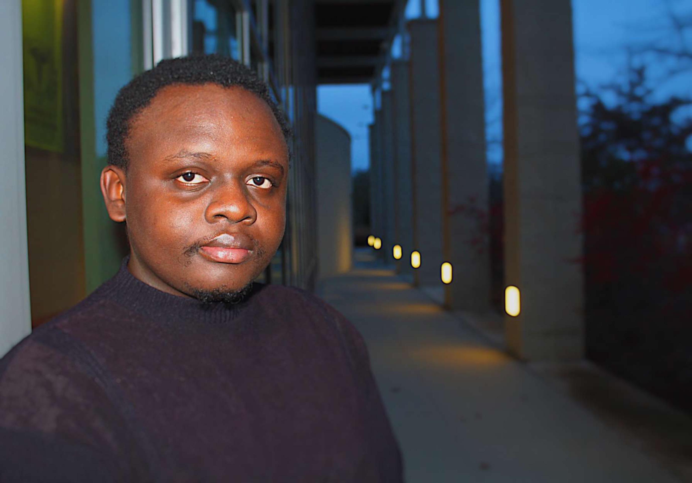

I am a restless polymath who is constantly looking for new growth curves.
Again, who am I? I self identify as an ambitious person who always clings to the notion
that "if the sky is the limit then why did we land on the moon?"
I am a senior and computer science is my major.
I have a fascination with coding and I like developing disruptive technologies.
I am always keen on working on innovative ideas that will revolutionize modern society.
I am never the one to make wishes on a shooting star, for if wishes were horses
then beggars would ride to heaven Valhalla.
I don't see Odin giving me a billion dollars only a reality check.

circa 2021
What do I love to do?
Before the pandemic, I volunteered in the Pleasantville Homework program,
where volunteers would help children from low-income households with their math and
science homework.I took this chance to mentor some of the children in the program.
The kids could identify me as one of their own because we both share a similar background.
I would use that trust to be able to educate them on the perks of having a positive mind
towards math and the benefits that are in STEM careers.
To nurture that interest, I would use my phone to teach them how to write simple programs
such as displaying "Hello World" to the console window using python language.
Via such exercises, I was able to keep them interested in learning to code.
During my free time I like to do the following:
Watch Anime
Listen to music on Spotify
Play Fortnite
One of my all time favorite quote:
“If you tell the truth, you don't have to remember anything.”
― Mark Twain
What are my struggles?
I believe the root cause of excluded groups from the field of technology is the growing
inequality in wealth and access to resources, which in turn influences their marginalization
from STEM careers. I can illustrate from my own experiences.
I got my first laptop at age twenty-one, and it was my first-time gaining access to a computer.
Something that is in stark contrast to my peers who were brought up with computers
in their households and had the opportunity to use them in conjunction with their parents'
iPhones and iPads. That being only the tip of the iceberg, they also got the added advantage
of going to schools that provided programming lessons at an early age. Therefore, a person
from a humble background such as myself ends up getting disillusioned because
I am beginning to learn to program in college as my peers are already familiar
with at least two programming languages.
Without any role model and mentor, dropping out seems to be an appealing option.
However, being the resilient honey badger that I am, I always strive to grasp any new concept.
If it is difficult at first, I do not let it discourage me from achieving my goal.
That is to become a software engineer. To address the mentioned challenge,
I took it upon myself to first learn the fundamental principles of coding in Java and to practice
more so that I become equipped to creating simple functioning programs.
Then share what I have learned with my colleagues or anyone interested in coding.
How I cope when the going gets tough:
I always remind myself that every cloud has a silver lining
I always talk to my mother, she is my number one supporter and always encourages me
I take my time to pray and meditate
Thank you whoever you are for taking your time to read through my blog post
About
Experienced team member with a demonstrated
history of working in the information technology and services industry.
Skilled in Prototyping, Web design, and Customer Satisfaction.
Strong business development and corporate communication scholar with a Bachelor of Arts
- BA focused in Linguistics, Media and Communication from Moi University.
Currently pursuing a second degree in Computer Science at Stockton University.